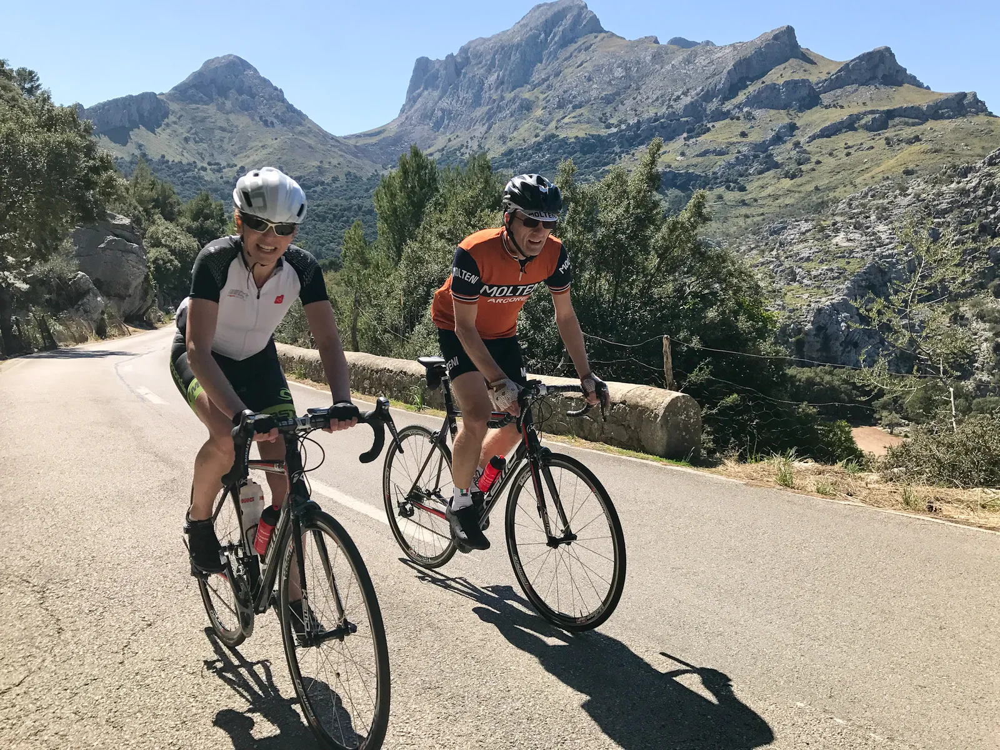

“Pane e acqua” – Molteni-bager har succes med EPOkalyptus brød

Det hele startede med Tyler Hamiltons bog. Nu skal alle cykelryttere køre pane e acqua – på vand og brød.
Efter at have været med som gæsterytter på Mallorca, strøg Tina fra Kvinderdercykler direkte til Toscana. Mest for at hvile bentøjet, men også for at hilse på Molteni’s nye bager i Mercato Centrale Firenze.
– Han var meget nem at kende, han stod midt i bageriet med sin Molteni cap. Alle cykelryttere skulle have det samme – brød og vand. Det smager fantastisk, og det må virkelig være en god forretning, siger Tina
Tina satte efterfølgende QOM på flere af de lokale stigninger.

Squadra Molteni’s nye bager kan næsten ikke følge med. Brødene med EPOkalyptus smag sælger som vand i Sahara. EPOkalyptus er en speciel sort, som er avlet fra det Australske Eukalyptustræ.
Alle skal have Pane e Acqua på bagerstoppet
Alle lokale ryttere lægger nu deres bagerstop forbi Squadra Molteni’s nye bagerbutik i Firenze.
Der bliver bagt på livet løs, og opskriften er nøje testet med de nyeste videnskabelige metoder.
– Vi har fået en af Italiens førende sportsfysiologer til at hjælpe os. Michele Ferrari har hjulpet en del med opskriften, og det har vist sig at være det hele værd, udtaler sportsdirektør Niels Bjørnsteen.
Kodesprog er nødvendigt
Den lokale bager, Giovanni Palla, er selv gammel cykelrytter – og det er vigtigt! I Italien bliver cykelryttere overvåget konstant. Alle samtale aflyttes. Derfor kan det nogen gange være nødvendigt at bruge kodesprog.
Giovanni ønsker da heller ikke at tale i telefon, men har sendt følgende svar via Western Union.
– Alle rEPOrtere skal dEPOrteres til AlEPO. Betal dEPOsitum og jeg sender din tEPOse med EPOst. Fyld indhold i kaffEPOse, rør med din katEPOtte og gem det i urtEPOtte. Indtag med oksEPOstej i sovEPOse og du er hurtig ud af din ladEPOrt.